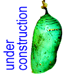
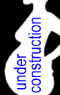
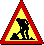
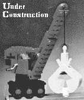
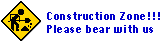
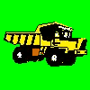
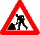
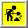
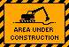
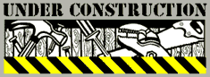

Don't believe me? Try this simple exercise. Face away from your computer, clear your mind, and slowly, carefully ask yourself the following question:
"What does editing HTML files have in common with shovels, hard hats, big trucks, and construction work?Hmmm... Nothing? That's right! Good, good! Now try this one:
If writing a simple web page is so difficult for me that I compare it to doing hard manual labor, does that mean I'm a nitwit?Well, yes, I'm afraid it does! See, with just a little thinking, you realize that the imagery of "under construction" icons on web pages is just some cute little joke which has, for no good reason, gone completely out of control. Time to quit it.
Now if, for some very unfortunate reason, you must put an under construction icon on the page you're writing (for instance, your boss will fire you if you don't), may I humbly suggest one of my alternative "under construction" icons:
| Pupa: (7K) | Da Vinci: (4K) | Expecting: (3K) |
|  |

|  |
On the other hand, if you go ahead and use one of the icons below, we will all know exactly what kind of message you're trying to convey...
|

"I have a great vision that one day this page will actually be
finished and complete. Please share in this delusion."
|
 "My company realized yesterday it had better make a web page for itself.
Too cheap to afford the services of a professional web designer,
they volunteered me to be the web person. All I can say in defense
of this page's current appearance is, I'm trying. I really am."
"My company realized yesterday it had better make a web page for itself.
Too cheap to afford the services of a professional web designer,
they volunteered me to be the web person. All I can say in defense
of this page's current appearance is, I'm trying. I really am."
| |
|

"I sincerely believe that I
am an interesting and creative person.
No, really."
|

"You see, we haven't really come to terms with the web as an extremely fluid and dynamic information technology." | |
|

"I update this page frequently. To indicate this fact, I'll show you a
picture of one my favorite toys from my childhood.
|
"Make no mistake! I am a MAN! This page is my
territory! Please withstand the stench of my body
odor long enough to look around and appreciate how utterly incompetent
I am at web design."
| |

"Yea, so this page isn't finished; what did you expect? But hey, isn't this animated gif totally rad? Woo-Hoo! Look at that shovel go! | ||
|

"Interfacing to new technologies is a really big effort for me."
|

"Although it shows a man and his shovel, this icon actually represents
a catch-all excuse for why my page currently looks so meagre.
Surprisingly, I expect all web surfers to understand this obscure
symbolism."
| |

"I have a persistent fantasy about being able to eloquently express exactly who I am with this page of mine. Until that comes to fruition, please view my lack of expressive power as merely a temporary phenomenon." |

"Sometimes when I'm editing web pages, I pretend I'm a steam shovel
moving large quantities of earth around, and I make lots of rumbling
whirring heavy machinery noises."
| |

"The neat thing about construction in the real world areas is that all expectations of functionality and appearance are quickly and quietly dropped. Please bring that same unquestioning and uncritical attitude to my dinky little web page." |

Bob Vila is the coolest. | |
|
I have high standards for my work. So high, in fact, that no matter how much I work on this page, I'm never quite happy with it. Like everyone else, I resort to using an under construction icon. But you can bet your socks that my icon looks fancier and shinier than your icon! | ||
{kind=link}
{kind=link}